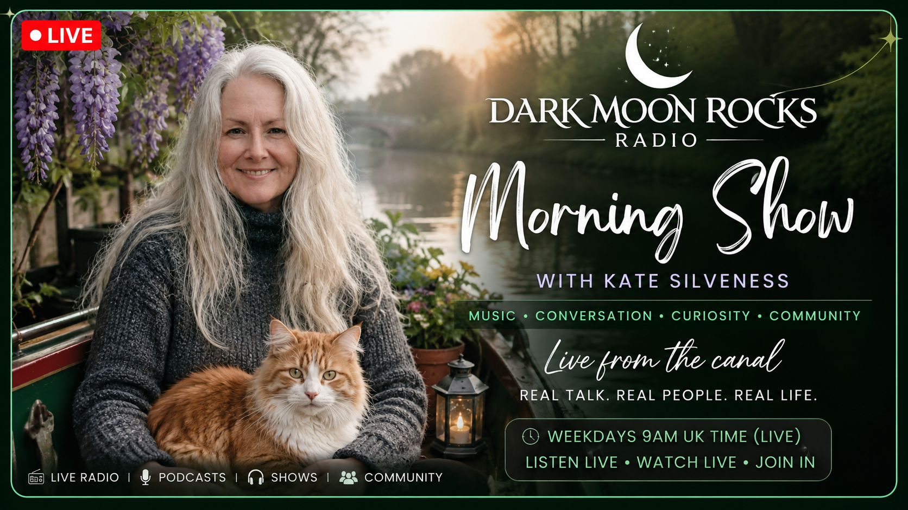

This is a place for curious minds, wandering souls, night thinkers, early risers, dreamers, makers and misfits who never quite fitted into the neat little boxes the world likes to build.
So make yourself comfortable.
The kettle is probably on.
The tide is always moving.
And somewhere out there, the lighthouse is still shining.

About Me
Hello, I'm Kate Silveness.
I live aboard a narrowboat on the Kennet and Avon Canal with my partner, a ginger and white cat who believes he owns the place, and a dog who may well agree with him.
For much of my life I have explored the meeting place between psychology, mythology, storytelling, personal growth and the stranger corners of human experience. Over the years I have worked with hypnosis, coaching, counselling, meditation, spirituality and the stories we tell ourselves about who we are and who we might become.
Dark Moon Rocks grew from a simple idea: that the world already has enough noise, outrage and certainty. What many of us need instead are spaces for curiosity, reflection, conversation and the freedom to explore ideas without being told what to think.
In 2026 life interrupted my plans rather dramatically when I suffered a stroke in my sleep. Recovery has been slower, stranger and more humbling than I expected. It changed my relationship with time, ambition and what truly matters.
Dark Moon Rocks became, in many ways, part of that recovery. A place to rebuild. A place to create. A place to turn difficult experiences into stories, conversations and resources that might help others navigating their own uncertain paths.
This project is not about perfection or polished expertise. It is about curiosity, resilience and continuing to make things even when life refuses to follow the script.
If you've found your way here, perhaps you're one of the people looking for something a little quieter, a little deeper and a little more human than the endless rush of modern life.
Pull up a chair.
The conversation has only just begun.